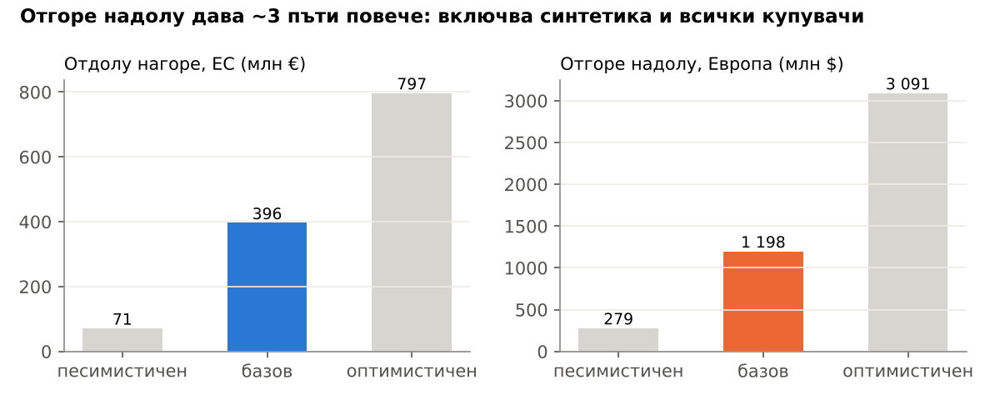
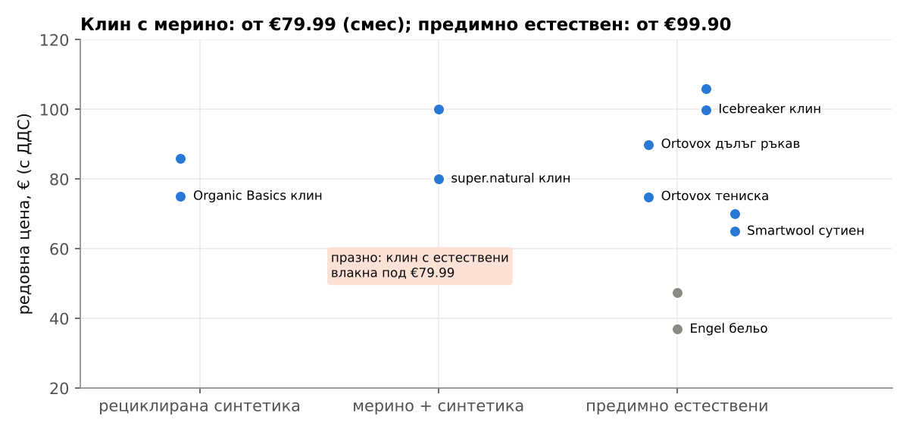
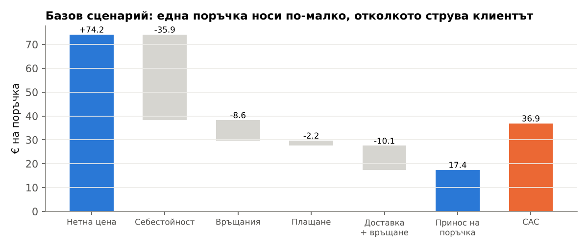
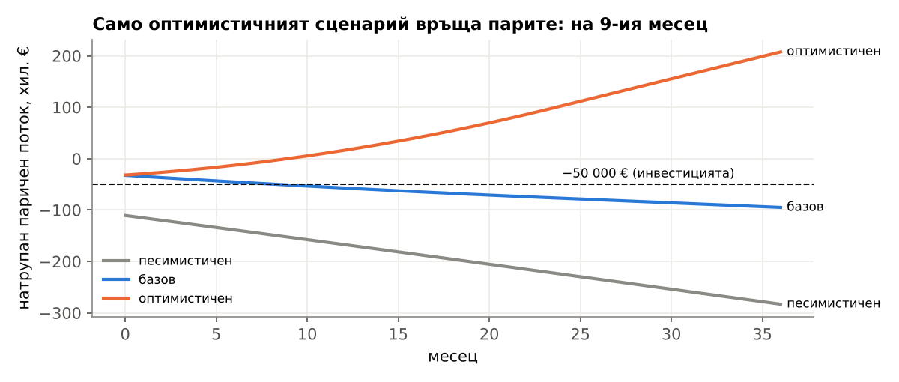
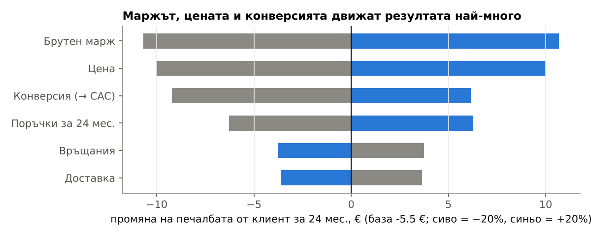
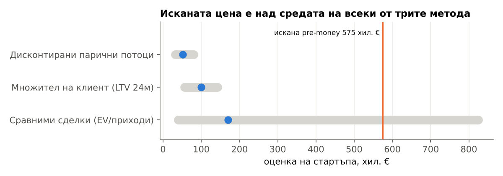

Да инвестираме ли 50 000 € в сертифицирани спортни облекла от естествени материи без BPA, PFAS и вредни химикали?
НЕ сега. ДА, само АКО двуседмичен тест за €600 покаже цена за клиент ≤ €19.69.
Нишата е реална, а пазарът (горна граница ~€0.4 млрд. отдолу нагоре в ЕС [ОЦЕНКА]) е много по-голям от 50 000 €. Проблемът е цената на клиента: в базовия сценарий всеки нов клиент носи загуба. Освен това „без PFAS“ става задължително във Франция и Дания през 2026 и спира да отличава марката. Остава „без BPA“, за което в ЕС още няма правило.

| Метод | Сметка | Базов |
|---|---|---|
| Отдолу нагоре | 450.4 млн. × 38% спортуват × 46% купуват онлайн × 4% плащат премия [ОЦЕНКА] × 1.26 поръчки × €99.90 | €396 млн. |
| Отгоре надолу | устойчиво спортно облекло $8.8 млрд. (медиана на 4 доклада) × 13.6% дял на Европа | $1.198 млрд. |
Отдолу нагоре е горна граница: 38% е делът сред хората на 15+ години, а 46% сред интернет потребителите, но и двата са приложени към цялото население. Разликата идва от определенията. Сметката отгоре надолу включва рециклирана синтетика, офлайн продажбите и всички купувачи. Отдолу нагоре броим само онлайн купувачите, които реално плащат премия (1–7%). Сумите не са превалутирани: курсът няма източник.
| Факт | Стойност | База |
|---|---|---|
| Готови да платят повече за устойчиви продукти (ЕС) | 59% | Евробарометър 2024; 72% през 2007 |
| Реално плащат премия за устойчиво облекло | 1–7% | ~19 000 анкетирани в 8 държави (BCG) |
| Средна заявена премия | 9.7% | >20 000 в 31 държави (PwC 2024) |
| Не са чували за PFAS (Германия) | 6 от 10 | BfR 2024 |
| Якета с PFAS в тест на НПО | 35 от 56 | IPEN 2023 |
| Марки с BPA: сутиени (2022) / клинове и шорти (2023), САЩ | 8 / 19 | CEH |
| Google Trends; брой обяви за работа | не е намерено | нужна е ръчна проверка |
Има реален страх от химикали (НПО тестовете), но осведомеността е ниска и готовността да се плати е повече на думи, отколкото на дело. Затова тестът трябва да мери поръчки, не харесвания.

| Марка | Цена | Отзиви | Финанси |
|---|---|---|---|
| Icebreaker | клин €99.90–105.95 | 4/5, ~2K | VF я купува за US$197.6 млн. (2018) |
| Smartwool | сутиен €64.95–69.95 | 1.5/5, 118 | в сегмента Outdoor на VF |
| super.natural | клин €79.99–100 | не е намерено | не е намерено |
| Ortovox | тениска €74.90 | 4/5, 84 | Outdoor сегмент €245 млн. (2022/23) |
| Engel Sports | бельо €36.89–47.50 | 4.2, 23 | не е намерено |
| Houdini | клин €109.52 | не е намерено | не е намерено |
| Organic Basics | клин €75–86 | не е намерено | не е намерено |
Нито една от 12 проверени марки не обещава „без BPA“. Българска марка не е намерена. Броят активни реклами не е намерен: Meta и Google Ads Transparency са блокирани в сесията.
| Правило | От кога |
|---|---|
| Франция: забрана на PFAS в облекла (закон 2025-188) | 01.01.2026 |
| Дания: забрана на PFAS в облекла | 01.07.2026 |
| ЕС: забрана на непотвърдени зелени твърдения (Дир. 2024/825) | 27.09.2026 |
| ЕС: PFHxA (подгрупа PFAS) в облекла (Регл. 2024/2462) | 10.10.2026 |
| ЕС: пълно ограничение на PFAS, гласуване (прогноза) | нач. 2027 |
| ЕС: BPA в текстил | няма правило |
| Германия: намерение за ограничение на бисфеноли | подадено 23.04.2026 |
| ЕС: EPR схеми за текстил | до 17.04.2028 |
Сертификатът (OEKO-TEX: ~€950 лиценз + ~€900 одит) остава нужен, за да можем законно да твърдим нещо след 27.09.2026. Отличието трябва да е „без BPA“ плюс естествени материи, потвърдени с лабораторен тест.

| Показател | Песим. | Базов | Оптим. |
|---|---|---|---|
| Цена с ДДС [ОЦЕНКА] | €75 | €89 | €99.90 |
| Брутен марж (публични компании) | 41.0% | 51.6% | 57.6% |
| CAC (Meta) | €43.85 | €36.92 | €13.87 |
| Стойност на клиента 12 / 24 мес. | −€12.51 / −€14.60 | €21.96 / €31.37 | €47.47 / €79.12 |
| Рентабилност (нови клиенти/мес.) | никога | никога | 10.53 |


При +20% на брутния марж печалбата от клиент за 24 мес. се подобрява с €10.69, при +20% на цената с €10.02, а при +20% на конверсията с €6.15. Нито една промяна поотделно не прави базовия сценарий силно печеливш (база −€5.55). Затова тестът трябва да мери едновременно цена и конверсия.

| Метод | Ниска | Средна | Висока |
|---|---|---|---|
| Сравними сделки (0.26x / 1.13x / 5.5x приходи) | €39 000 | €169 500 | €825 000 |
| Множител на клиент (1 800 × LTV 24 мес.) | €56 475 | €99 446 | €142 416 |
| Дисконтирани потоци (70/60/50%; марж и ръст [ОЦЕНКА]) | €31 698 | €51 276 | €80 242 |
Данните на стартъпа (приходи €150 000, EBITDA −€30 000, 1 800 клиенти, искане €50 000 за 8%) са [ОЦЕНКА, хипотетични]. Пълен отчет: reports/Оценка на сделка.md.
| Файл | Съдържание | Проверено |
|---|---|---|
| analysis/research/01_razmer_pazar.md | пазарни размери, Евробарометър, Евростат | 30.10.2026 |
| analysis/research/02_klienti_tarsene.md | готовност за плащане, PFAS/BPA тестове | 30.10.2026 |
| analysis/research/03_konkurenti_ceni.md | 12 марки, цени, финанси | 30.10.2026 |
| analysis/research/04_regulacii.md | PFAS, BPA, EmpCo, EPR, сертификати | 30.10.2026 |
| analysis/research/05_kanali_cac.md | CPM, CTR, конверсия, CAC, комисиони | 30.10.2026 |
| analysis/research/06_ikonomika.md | брутни маржове, суровини, CMT | 30.10.2026 |
| analysis/research/07_otzivi_reklami.md | Trustpilot, послания | 30.10.2026 |
| analysis/research/08_sdelki_mnojiteli.md | сделки, Damodaran, seed оценки | 30.10.2026 |
| analysis/research/09_oficialni_fakti.md | официални факти (население, регламенти) | 30.10.2026 |
Методология. Всяка сметка е в analysis/model.py, а всеки параметър с източника му е в analysis/params.csv. Скриптът се пуска наново и дава същите числа. Researcher-ите са събрали числата през търсачка. Много първоизточници (eur-lex, ec.europa.eu, sec.gov, trustpilot) са блокирани в сесията, затова числата са сверени с откъсите, а не с отворените документи.
Кое е оценка: нашата цена (€75/€89/€99.90); ДДС 20% (не е проверен онлайн); дял на плащащите 4% (базов); знаменателят на пазара (горна граница); поръчки за 12 мес. (1.20/1.26/1.32); марж на публични компании, приложен към малка марка; доставка €8.25 и €0; поръчки за 24 мес. 1.4 и 2.2; постоянни разходи; маркетинг €2 000/мес.; 3 модела; бюджет за теста €600; всички данни на хипотетичния стартъп; ръстът и маржовете в DCF.